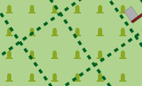

Das Theme enthält drei verschiedene Stile. Die Stile treffen eine Vorauswahl der Funktionen und des Designs. Die
stil-bezogenen Optionen sind nur bei der entsprechenden Auswahl sichtbar. Mit den Optionen kann die Karte an die eigenen
Bedürfnisse angepasst werden.
Handel, Einkaufszentrum oder Bereich mit überwiegend Einzelhandelsgeschäften
Industrie- / Gewerbegebiet, überwiegend Werkstätten, Fabriken oder Lagerhallen; für Gleise und Bahnhöfe genutztes Eisenbahngelände
Weg, Platz oder Straße auf der nur Fußgänger erlaubt sind, z.B. Fußgängerzone oder Einkaufspassage
Gehöft, landwirtschaftlich genutzte Flächen mit Gebäuden wie Häusern, Ställen, Fahrzeughallen, Futterspeichern usw.
Campingplatz, Stellplatz für Wohnmobile
Parkplatz (eingeschränkt, z.B. für Kunden)
Schule, Hochschule, Universität (Campus oder Gebäude)
Öffentliche Gebäude
Sporteinrichtung, Turnhalle
Außengastronomie, Biergarten
Flughafen, Vorfeld, Flugsteig
Kraftwerk, dient der Erzeugung von Strom oder Wärme; Umspannwerk, Umspannstation
Deponie, Aufschüttung, Müllhalde
geplantes Baugebiet, Bauerwartungsland, unerschlossenes, für Bebauung vorgesehenes Land
Baugebiet (aber auch Brachland)
Rohstoffabbau oberirdisch, Steinbruch, Grube (Kies, Ton, ...), Tagebau
Militärisch genutztes Gebiet, Kasernen, Truppenübungsplätze, usw.
Gefahrenzone, Sperrgebiet
Naturschutzgebiet mit Betretungsverbot
Forst, forstwirtschaftlich genutzer Wald; differenziert nach Misch-, Laub- oder Nadelwald
Naturwald, keine forstwirtschaftliche Nutzung; differenziert nach Misch-, Laub- oder Nadelwald

Friedhof, differenziert nach Religionen
Zoologischer Garten, Tierpark, auch Freizeitpark, Themenpark, Museum
Kleingarten, Schrebergarten, Grabeland
Unkultiviertes Land, Unterholz, Busch, Gebüsch
Boden mit Sand bedeckt, kein oder nur spärlicher Bewuchs
Obstplantage, Obstgarten, Gemüseanbau, Anpflanzung von Bäumen oder Sträuchern zur Lebensmittelproduktion
Wasser allgemein, Meer, Seen, Teiche, Flüsse, Speicherbecken usw.
Jachthafen, Liegeplatz für Jachten und Motorboote
Gletscher, Gebiet, das ganzjährig mit Eis bedeckt ist; oder Eislaufbahn
Alm, Bergwiese, Matten, Bereich oberhalb der Baumgrenze
Feuchtwiese, auch Salzwiese
Moor, Nieder-, Hoch- oder Strangmoor
Saline (zur Salzgewinnung)
Straßen:
Autobahn, Straße mit baulich getrennten Fahrtrichtungen (im allgemeinen Grünstreifen) und besonderen Nutzungsbeschränkungen (Einbahnstraße, Verbot für Fußgänger und Radfahrer). Typischerweise zwei Fahrspuren je Fahrtrichtung oder mehr und ein Standstreifen.
Autobahnähnliche Straße, aber keine Autobahn.
Bundesstraße, Hauptverbindungsstraße unter zentraler Verwaltung mit besonderer Kennzeichnung, die meist größere Städte verbindet und dem überregionalen Verkehr dient. Außerdem: Straßen mit übergeordneter Verkehrsbedeutung.
Land- oder sehr gut ausgebaute Kreisstraße (oder Auffahrt hierauf) Straße mit Mittellinie, die kleinere Städte oder größere Orte verbindet. Die Straße dient dem zwischenregionalen Verkehr.
Kreisstraße, sehr gut ausgebaute Gemeindeverbindungsstraße, die in erster Linie regionalen Verkehrsbedürfnissen dient. Wenig befahrene Vorfahrtstraße, die kleinere Orte verbindet. Innerstädtische Vorfahrtstraßen mit Durchfahrtscharakter.
Nebenstraße, öffentlich befahrbare Nebenstraße mit einfachstem Ausbauzustand, typischerweise keine Mittellinie. Z.B. Gemeindestraßen mit Verbindungscharakter, die zu schmal sind, um als Kreisstraße zu gelten.
Wohngebietsstraße, Straße an und in Wohngebieten, die keiner anderen Straßenklasse angehört.
Erschließungsstraße oder -weg, Zugang / Zufahrt zu Einrichtungen wie Sportanlagen, Stränden, Autobahnraststätten oder allgemein zu Gebäuden.
Verkehrsberuhigter Bereich, eine Straße in der auf spielende Kinder aufgepasst werden muss,
Fußgänger bevorzugt behandelt werden und nur Schrittgeschwindigkeit erlaubt ist.
Fußgängerstraße, Weg oder Straße auf der nur Fußgänger erlaubt sind (z.B. typisch für Einkaufspassagen).
Straßen und Wege mit generellem Nutzungsverbot bzw. für den Kraftverkehr:
- Die Benutzung ist generell nicht erlaubt oder nicht möglich.
- Der Privateigentümer erlaubt die Benutzung in der Regel nicht.
- Die Benutzung ist für Kraftfahrer nicht erlaubt oder nicht möglich.
Straßen und Wege mit Nutzungsbeschränkung für den Kraftverkehr:
- Die Benutzung ist nur zur Anlieferung von Waren zum Kunden erlaubt.
- Die Benutzung ist nur erlaubt, wenn das Ziel an dieser Straße oder Weg liegt.
Straßen und Wege mit Nutzungsbeschränkung für den Kraftverkehr:
- Die Benutzung ist nur für den landwirtschaftlichen Verkehr erlaubt.
- Die Benutzung ist nur für den forstwirtschaftlichen Verkehr erlaubt.
Sonstiges:
Im Bau befindliche Strassen und Wege
Notfallspur, Notbremsweg (grau)
Rad-, Fuß-, Reitwege, Pfade:
Der Weg ist nicht breit genug für ein Fahrzeug
Treppen, Treppen auf Fuß- oder Wanderwegen nur für Fußgänger.
Allgemeiner Fußweg, hauptsächlich für Fußgänger.
Kombinierter Rad- und Fußweg, gemeinsame Nutzung durch Radfahrer und Fußgänger.
Reitweg, ein Weg nur für Reiter.
Allgemeiner Weg oder Pfad, hier in der Bedeutung von Wanderweg / Trampelpfad; nicht breit genug für Fahrzeuge.
Wirtschafts-, Feld- oder Waldwege.
Der Weg ist breit genug für ein Fahrzeug. Es werden drei Ausbauformen unterschieden:
Güteklasse 1, befestigter Weg (Asphalt, Beton, Pflastersteine, etc.).
Güteklassen 2, 3 (sowie 0)
2 = Befestigter Weg (Schotter oder andere verdichtete Untergründe).
3 = Befestigter oder ausgebesserter Weg, der harten und weichen Untergrund enthält (z.B. Feinschotter-, Sand- oder Erdweg).
0 = Für den Weg ist keine Güteklasse angegeben.
Güteklassen 4, 5
4 = Unbefestigter Weg, hauptsächlich weiche Materialien, Pflanzenwuchs entlang der Spurmitte (z.B. Gras-, Sand- oder Erdweg).
5 = Unbefestigter Weg, Oberfläche besteht aus Sand, Erde etc., oft nur Abdruck im Gras, teilweise schwer von umgebendem Gelände unterscheidbar.
(Berg-)Wanderwege.
Es werden vier Schwierigkeitsgrade unterschieden:
Wanderweg, T1
T1 = Wanderweg
Bergwanderweg, T2 oder T3
T2 = klassischer Bergweg
T3 = anspruchsvoller Bergweg
Alpiner Wanderweg, T4, T5 oder T6 (Alpinwandern; erfordert entsprechende Erfahrung)
T4 = alpiner Wanderweg
T5 = anspruchsvoller, alpiner Wanderweg
T6 = schwieriger, alpiner Wanderweg
Klettersteig (gesicherter Kletterweg)
Klettersteig (Via Ferrata) = gesicherter Kletterweg
Eisenbahnen:
Eisenbahn, Hauptgleis. Beinhaltet Standseilbahnen.
Schmalspurbahn, Miniaturbahn
Service Gleise, beinhaltet auch Rangiergleise, Industriegleise, Strecken im Bau und nicht mehr in Betrieb
Bahntunnel, Tunnel verschiedener Bahnen
Straßenbahn, Spurbus, nutzen den Verkehrsraum zu großen Teilen zusammen mit dem Individualverkehr.
Seil- und andere Bahnen:
Pendel- und Gondelbahn, Kabinenbahnen mit entweder 2 grösseren Kabinen, die gegenläufig fahren, oder Gondelbahnen mit vielen kleinen Kabinen auf einem Umlaufseil, sowie Sesselifte
Skilift, beinhaltet alle Formen von Schleppliften für Skifahrer
Materialseilbahn, Personentransport normalerweise nicht erlaubt.
Fähren:
Fähre, Passagierschiff, route einer Fährlinie auf See oder in Binnengewässern
Stromleitung, Hochspannung
Stromleitung, Nieder- oder Mittelspannung
Grenzen, Die Politische Grenzen werden in verschiedenen Farben dargestellt: Land, Bundesland, Regierungsbezirk ,(Land-) Kreis, kreisfreie Stadt, Gemeinde, Stadtteil.
Wehr, eine Barriere, die durch einen Fluss gebaut ist. Das Wasser kann durchaus weiterhin drüber hinweg fließen.
Staudamm, Staumauer, Absperrbauwerks einer Talsperre oder einer Stauanlage
Deich, künstlicher Damm zwecks Hochwasserschutz.
Höhenlinien (in niedrigen Zoomstufen grau dargestellt)
Abstände 500m, 100m, 20m
Um Verwirrung zu vermeiden, sollte immer nur ein Routentyp aktiviert werden. Wenn vorhanden wird die Route mit Name und
Nummer angezeigt. Die Route wird jeweils in der Farbe des höchstwertigen Netzwerks angezeigt. Der Name wird ebenfalls aus
dem höchstwertigen Netzwerk entnommen. Es kann nur ein Name angezeigt werden. Es werden jedoch alle vorhandenen Nummern
angezeigt.
Routen für Fahrradfahrer, Wanderer, Inline-Skater, Reiter, Kanu- oder Motorbootfahrer
Lokale Route
Fahrrad "lcn"
Wandern "lwn"
Inline "local"
Reiten "lhn"
Kanu "lpn"
Motorboot "lmn"
Regionale Route
Fahrrad "rcn"
Wandern "rwn"
Inline "regional"
Reiten "rhn"
Kanu "rpn"
Motorboot "rmn"
Nationale oder internationale Route
Fahrrad "ncn" oder "icn"
Wandern "nwn" oder "iwn"
Inline "national"
Reiten "nhn" oder "ihn"
Kanu "npn"
Motorboot "nmn"
Routen für MTB-Fahrer:
Mountain Bike (MTB) Route
Um Verwirrung zu vermeiden, sollte immer nur ein Netzwerktyp aktiviert werden. Wenn vorhanden wird das Netzwerk mit Name und
Nummer angezeigt. Die Knoten werden mit Nummer angezeigt.
Gasthaus (Pension, Herberge, Bed & Breakfast)
unbewirtschaftete Schutzhütte (Selbstversorger)
bewirtschaftete Schutzhütte (Berghütte)
bewirtschaftete Schutzhütte und Restaurant (Berghütte)
Zentrum für Gemeinschaften
Vogelbeobachtungsturm oder -versteck
Haltestelle (Bus, Straßenbahn)
Bahn, Haltepunkt (kein Bahnhof)
S-Bahn, Haltepunkt (kein Bahnhof)
Slipanlage (Rampe für Boote)
Lokale Behörde, Verwaltung
christlicher Anbetungsort (z.B. Kirche)
jüdischer Anbetungsort (z.B. Synagoge)
muslimischer Anbetungsort (z.B. Moschee)
Wrack (gesunkenes Schiff)
Schacht, Bergwerk (vertikaler Zugang)
Schacht, Bergwerk geschlossen (vertikaler Zugang)
Stollen (horizontaler Zugang)
Berggipfel (meist mit Höhenangabe)
allgemeiner Point-Of-Interest
Kultur & Unterhaltung allgemein
Grabstätte (bedeutende Person)
Infrastruktur & Organisationen allgemein
Konditorei, Süßwarenhändler
Gemüsehändler, Obsthändler
Parfümerie, Kosmetikgeschäft
Sanitätshaus, Orthopädie Fachgeschäft
Musikgeschäft (vinyl, CD, …)
Fitness Station (Vitaparcour, Trimm dich)
Rudern (Bootshaus/Einstieg)
anspruchsvoller Bergwanderweg
anspruchsvoller alpiner Weg